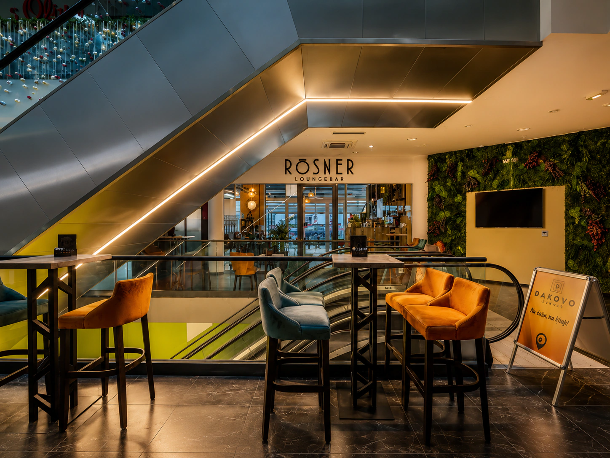
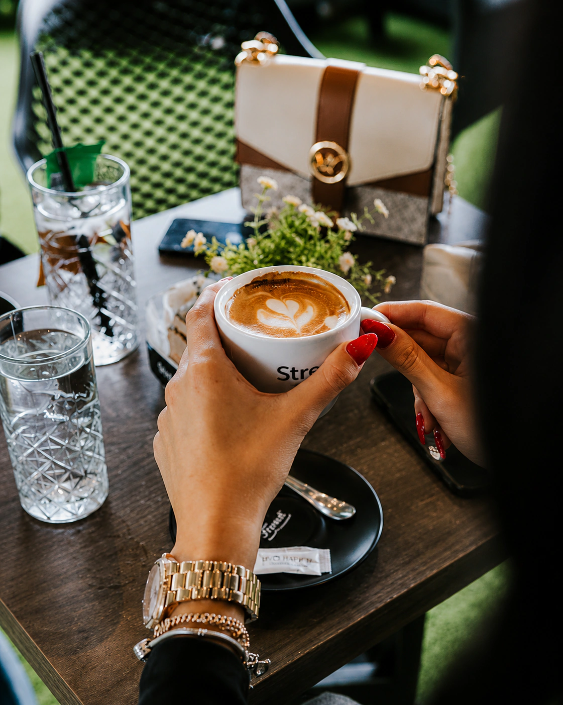
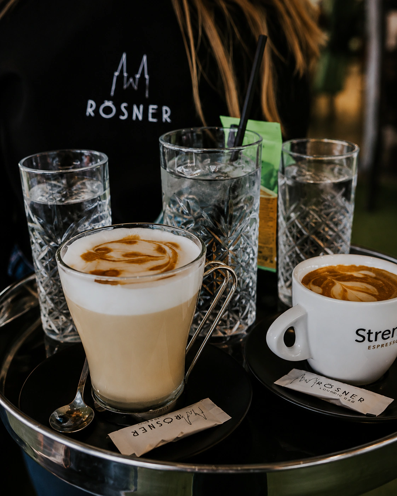
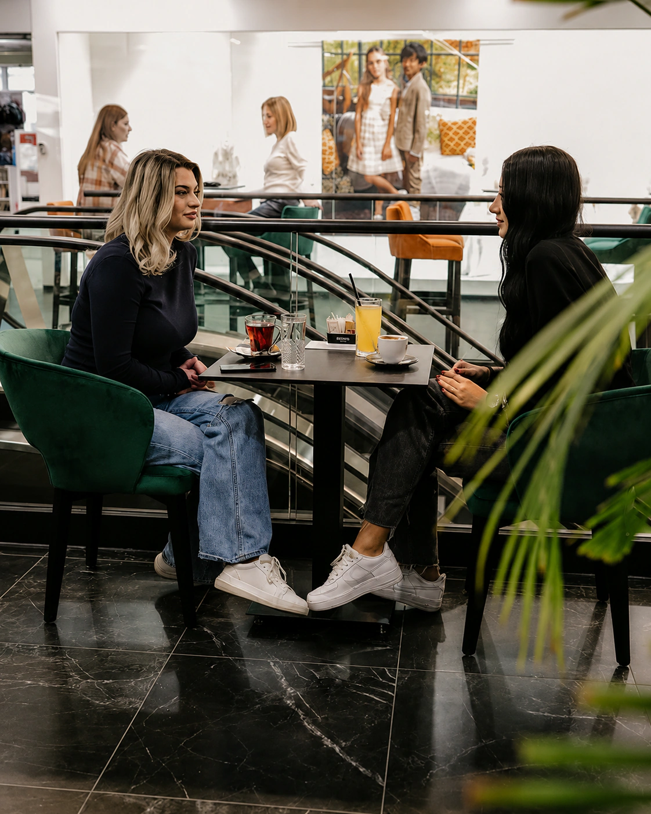
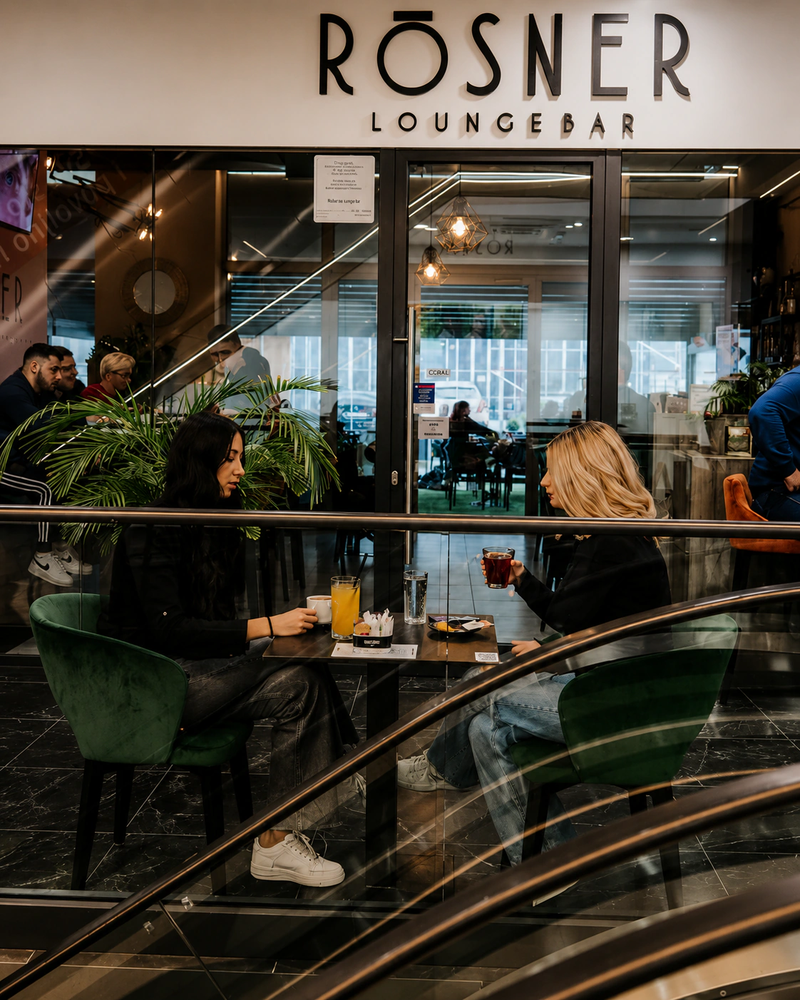

Rōsner Lounge Bar


Kava.Piće.Grad.
GradUpoznaj mjesto
01 — U srcu grada
Gradska stanicau blizini katedrale.

U samome centru Đakova, Rosner je vaše mjesto za kavu, piće i susret u svakodnevnom koraku.
02 — Coffee & Drinks
Miran početak i opušten kraj dana.
Vaš savršeni gradski predah.



03 — Galerija
U centru svega.
Od prostora do trenutka. Odaberi fotografiju za puni prikaz.
04 — Pronađi nas
Đakovo
Shopping centar u centru Đakova
Otvori lokaciju u kartama i pokreni navigaciju.
Pokreni navigaciju